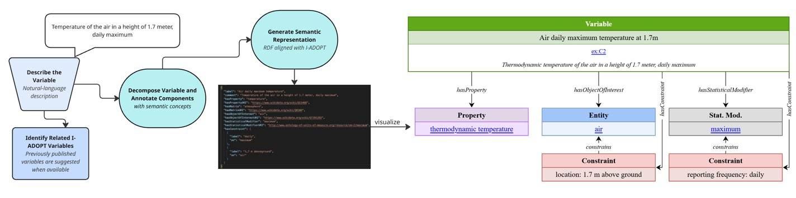

The I-ADOPT Variable Annotation Service
Barbara Magagna ![]()
The LLM-Assisted I-ADOPT Variable Annotation Service
To automate the process of variable descriptions aligned with the RDA endorsed I-ADOPT Framework, a collaboration between NFDI4Earth and the FAIR2Adapt project worked on the development of the I-ADOPT Service.
The service leverages Large Language Models (LLMs) to transform natural language descriptions of observational research into I-ADOPT-aligned, machine-interpretable representations. This service enables researchers to generate FAIR-compliant metadata without requiring deep semantic or technical expertise. The resulting RDF representation is visualized in a graphical interface where users can review and edit the decomposition before publishing it as a nanopublication.
We currently offer the I-ADOPT service on GitHub, allowing users to install and run it on their own devices. To enhance accessibility and ease of deployment, we are dockerizing the service. This will enable users to embed the I-ADOPT service in any data registry with minimal setup, ensuring consistency, portability, and scalability across different environments.
I-ADOPT Corpus
A collection of variables from different domains is used as a ground truth for reference decompositions (I-ADOPT Corpus).
- 102 variables from more than 10 domains were modelled using the I-ADOPT Visualizer
- Decompositions were aligned and harmonized according to recurring patterns
- All decompositions are published as issues in the examples playground repository
- Domain experts evaluated and refined the decomposition together with semantic experts based on an evaluation schema
- All variables are represented in RDF turtle (ttl) in this repo
- All variables are visualized in the I-ADOPT Corpus Collection
Key Features
- Natural Language Input:
- Users provide plain-language descriptions of observed variables (e.g., “surface soil temperature at 10 cm depth”).
- The LLM processes these descriptions and decomposes them into the I-ADOPT description components.
- The components are annotated with Wikidata concepts.
- Visualisation of the variable and human-in-the-loop functionality:
- The variable decomposition is visualized using the Visualizer provided by Sirko Schindler
- The Visualizer enables users to manually optimize the decomposition
- The service allows export of the decomposition in different formats and the minting of a new variable as an FAIR Digital Object nanopublication
- Integration with Research Platforms:
- The service is designed to integrate with platforms like RoHub, enabling seamless adoption in research data infrastructures.
- Supports FAIR data stewardship by generating machine-readable metadata that aligns with community standards.
- Community-Driven Validation:
- The service is linked to national and European initiatives, allowing for direct evaluation and feedback from end-users and domain experts.

Our Next Steps
- Develop Variable Design Patterns
- Develop Decision Trees for applying the Variable Design Patterns
- Enrich service with Patterns and Decision Trees
- Enable the reuse of semantic concepts from the vocabularies hosted in the semantic artefact catalogues of your choice
- Search of pre-existing variables
- Embed the service in ROHub
- Provide a dockerised version of the service
Applications
- Research Data Management: Automate the creation of FAIR-compliant metadata for datasets in earth and environmental sciences.
- Cross-Domain Interoperability: Facilitate the integration of data across disciplines by standardizing variable descriptions.
- Semantic Enrichment: Enhance the discoverability and reusability of research data through structured, machine-interpretable annotations.
Get Started
Our service will be ready for testing and integration on March 24, 2026. Whether you are a researcher, data steward, or platform developer, you can use this tool to explore its functionalities:
- Go to our I-ADOPT Service repo, follow the instructions and install the service on your computer
- Generate I-ADOPT-aligned variable decompositions from natural language.
- Improve the FAIRness of your datasets.
- Contribute to community-driven validation and refinement of the LLM models.